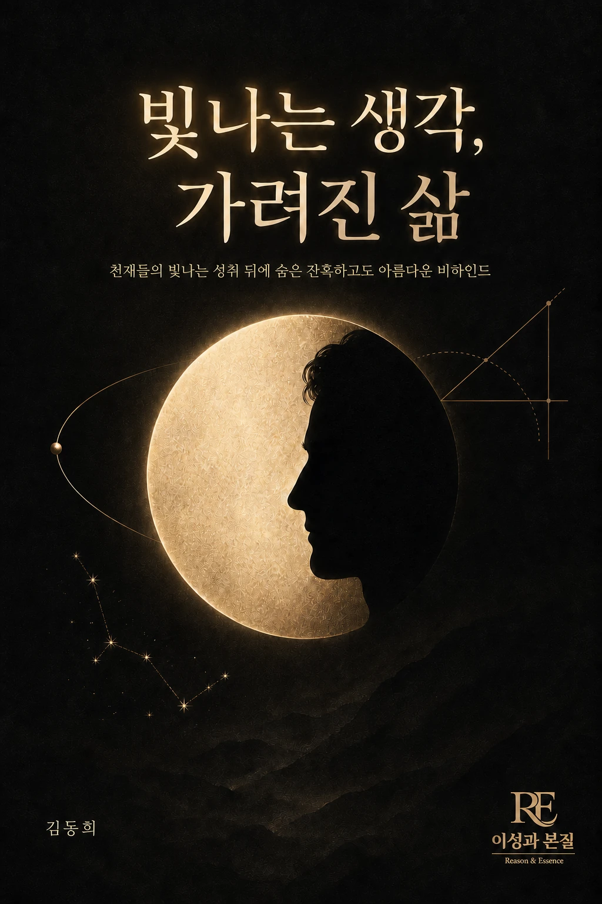

인문교양 · 출간
빛나는 생각, 가려진 삶
천재들의 빛나는 성취 뒤에 숨은 잔혹하고도 아름다운 비하인드

소크라테스에서 에르되시까지, 철학자와 과학자 30여 명의 생애를 21개의 장으로 따라간다. 업적의 이름 뒤에 가려진 재판과 질병, 협업과 책임, 공로의 배분을 되살린 생각과 삶의 역사.
기획 의도
역사는 복잡한 발견을 몇 개의 이름과 문장으로 압축해 기억합니다. 업적이 교과서의 정리와 공식으로 굳어지는 동안 그것을 만든 사람이 겪은 재판과 질병, 협업과 돌봄, 정치적 선택은 기록에서 빠져나갔습니다. 이 책은 박해와 질병, 자살과 공로 누락을 하나의 '천재의 비극'으로 묶지 않고, 사건마다 작동한 제도와 조건을 구분해 업적을 더 온전하게 이해하고자 합니다.
예상 독자
과학사와 철학사를 업적의 연대기가 아니라 사람과 제도의 역사로 읽고 싶은 독자, 천재 신화와 순교자 서사에 의문을 가져 온 독자, 과학기술의 책임과 연구 윤리, 공로 배분 문제를 구체적 사례로 살피려는 독자.
목차
일러두기
여는 글 · 빛나는 생각 뒤에 가려진 삶
1부. 권력이 사유를 심판할 때
- 1장 소크라테스: 재판과 독배
- 2장 히파티아: 권력 투쟁이 지운 이름
- 3장 브루노·갈릴레이: 우주와 종교재판
2부. 선택지가 좁아진 삶들
- 4장 세네카: 강요된 죽음과 자기 통제
- 5장 벤야민: 역사의 한계, 포르부의 밤
- 6장 들뢰즈: 질병과 ‘하나의 삶’
3부. 사유의 한계와 삶의 균열
- 7장 칸토어: 무한의 크기를 비교하다
- 8장 괴델: 증명의 한계와 불안
- 9장 볼츠만·에렌페스트: 엔트로피와 고립
- 10장 니체: 영원회귀와 사후의 전유
4부. 직관과 증명, 발견과 발명
- 11장 라마누잔·하디·디랙: 직관, 증명, 아름다움
- 12장 아벨·갈루아: 방정식과 뒤늦은 인정
- 13장 패러데이·맥스웰·아인슈타인: 보이지 않는 것을 본 눈
5부. 만든 것 앞에서
- 14장 오펜하이머: 창조와 양심
- 15장 프리츠 하버: 비료와 화학전의 책임
- 16장 제멜바이스·튜링: 제도와 개인의 상처
6부. 우연, 그리고 지워진 이름들
- 17장 준비된 우연: 곰팡이와 꿈
- 18장 동시 발견: 진리를 소유하는 이름
- 19장 공로가 충분히 기록되지 않은 이름들
- 20장 페렐만·그로텐디크: 상과 제도를 떠나다
- 21장 에르되시: 떠도는 기쁨
닫는 글 · 생각은 빛나고 삶은 남는다
장별 보충 설명
도서목록으로 돌아가기